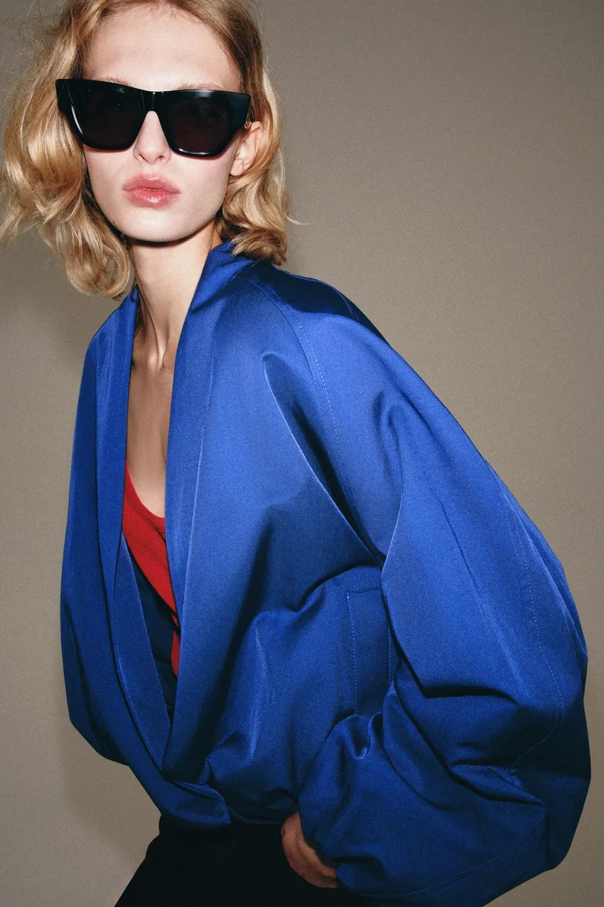

Diagnóstico y mejora
Ver la prenda de verdad
Primero hago un diagnóstico: qué hace bien Zara con la tecnología y qué podría mejorar. Después explico mi propuesta para su futuro.

Lo que Zara hace bien
-
Todo está conectado
La tienda, la web y la app comparten un solo inventario, así que casi nunca pierde una venta por no tener una talla en un sitio.
Fuente: [F7]
-
Sabe dónde está cada prenda
Gracias al RFID, que ya está en todas sus tiendas, no tiene que contar la ropa a mano.
Fuente: [F6]
-
Es muy rápida
Llega ropa nueva a las tiendas dos veces por semana y puede enviar a cualquier país en 48 horas como máximo.
Fuente: [F10]
-
Tiene su propia tecnología
La plataforma IOP la ha creado Inditex, así que no depende de otra empresa.
Fuente: [F15]
Lo que podría mejorar
Esta columna es mi opinión, a partir de lo que he investigado. No son datos oficiales de Inditex.
-
Más trabajo en tienda
Ahora los dependientes, además de vender, preparan pedidos online.
-
Depende de la tecnología
Si el sistema falla, se para todo: tienda, web y almacén.
-
Sostenibilidad
Vender tanto y tan rápido genera mucha ropa y muchos envíos.
-
Datos personales
La app guarda mucha información de los clientes, y hay que protegerla bien.
-
Las fotos de las prendas
Muchas fotos son muy artísticas y no dejan ver bien cómo es la prenda. Esto es lo que quiero mejorar.

Mi propuesta
El problema
En la web y en la app de Zara muchas fotos son artísticas: posturas raras, brazos que tapan la prenda, poca luz o fondos que no contrastan con el color de la ropa. Así el cliente no ve bien la forma, el tejido ni los detalles.
Si la prenda no se ve bien, es más fácil equivocarse y devolverla. Y cada devolución vuelve a mover ropa entre almacenes y tiendas.
Esto es una hipótesis mía, no un dato de Inditex.
La solución, en tres partes
- Primera foto, siempre clara. De frente, entera, con buena luz y un fondo que contraste con el color de la prenda. Las fotos artísticas van después.
- Fotos de detalle. Zoom del tejido, los botones o los bordados, y un vídeo corto de la prenda girando.
- Un revisor con IA. Antes de publicar, un programa de reconocimiento de imágenes comprueba si la prenda se ve entera, si hay luz y si contrasta con el fondo. Si no, avisa al equipo.
A quién ayuda
A los clientes, que compran más seguros; a la empresa, con menos devoluciones; y al planeta, con menos envíos de vuelta.
Cómo saber si funciona
Comparar, antes y después, cuántas prendas se devuelven con el motivo «no era como en la foto». Si ese número baja, la propuesta funciona.
Prenda de ejemplo
Vaquero ancho
El revisor con IA comprueba:
- La prenda se ve entera
- Hay luz suficiente
- Contrasta con el fondo
- Tiene detalle y vídeo
Lista para publicar
Maqueta hecha por mí para explicar la idea. No es una página real de Zara. Fotos de campaña de Zara (zara.com).